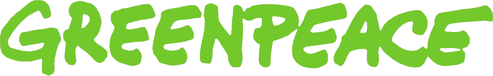
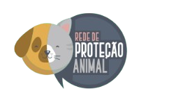

Nossa Missão
Agro Forte é produzir com responsabilidade: solo saudável, ar limpo e respeito aos animais. Escolha um cartão para saber mais.
Produção sustentável
Agro Forte é produzir alimentos sem esgotar o solo nem a água. Práticas sustentáveis — rotação de culturas, menos desperdício, cuidado com a natureza — garantem produção hoje e um campo vivo amanhã.
Dê uma olhada na

Ar limpo
No campo e na cidade, ar limpo faz parte de um Agro Forte: mude agora, por você, pela produção e pelas próximas gerações. Respirar bem é direito de quem planta, colhe e vive no entorno rural.
Dê uma olhada no
Bem-estar animal
Nossos animais de produção merecem uma boa qualidade de vida: estamos todos vivos. Cuidar de quem alimenta o país faz parte do equilíbrio entre Agro Forte e sustentabilidade.
Dê uma olhada no programa
